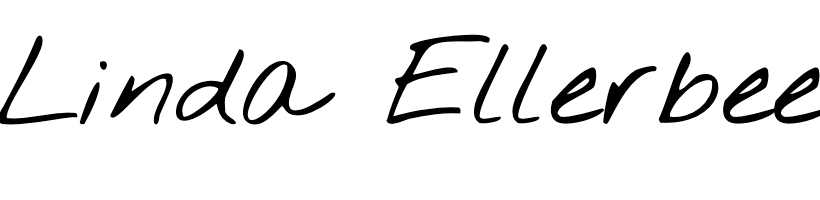

OUR COMMITMENT
Misinformation & related confusion and misunderstanding about important social and political problems. Promoting media literacy is a powerful way to deal with these problems by inviting consumers to a culture of informed & selective consumption where misinformation is condemned and ethical journalism is rewarded.
Social and political polarization between groups in an increasingly polarizing social media environment. Advocating for media literacy produces better decision-makers who recognize the polarizing nature of social media platforms and are able to demonstrate compassion to others and genuine interest in the other opinion.
Misuse of media is a major factor in problems like depression, social anxiety, and suicide. From individuals limiting time spent on social media to parents advisedly choosing content for their children, well- being and lifestyle can be improved through conscious media consumption.
Democracy is always under threat, has to be protected, and never be taken granted for. It is directly dependent on free media. Today media is a powerful tool that is used in achieving democracy but also in hijacking it. Supporting media literacy is the ultimate way to protect democracy and raise informed audience gatekeepers.
Prompted to promoting media literacy
Better informed media users for a brighter future! We are interested in teaching conscious media consumption to all people. From individuals improving their lifestyle to a more educated populace, there is so much to achieve through studying how to better interact with different forms of media.

Media literacy is not just important, it's absolutely critical. It's going to make the difference between whether kids are a tool of the mass media or whether the mass media is a tool for kids to use.
